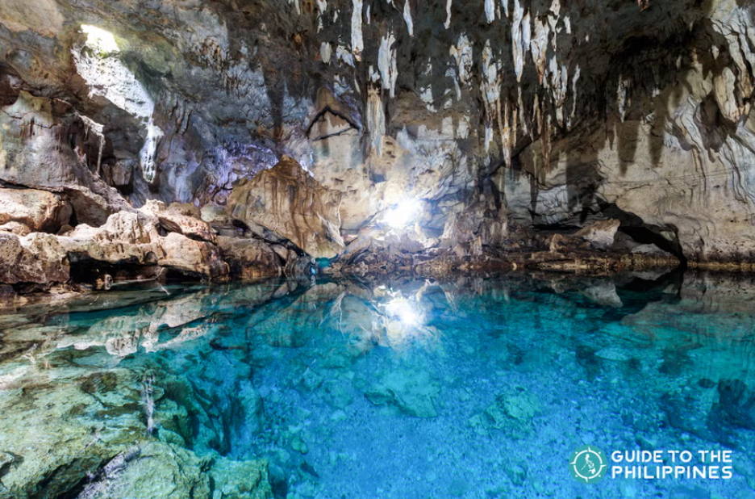
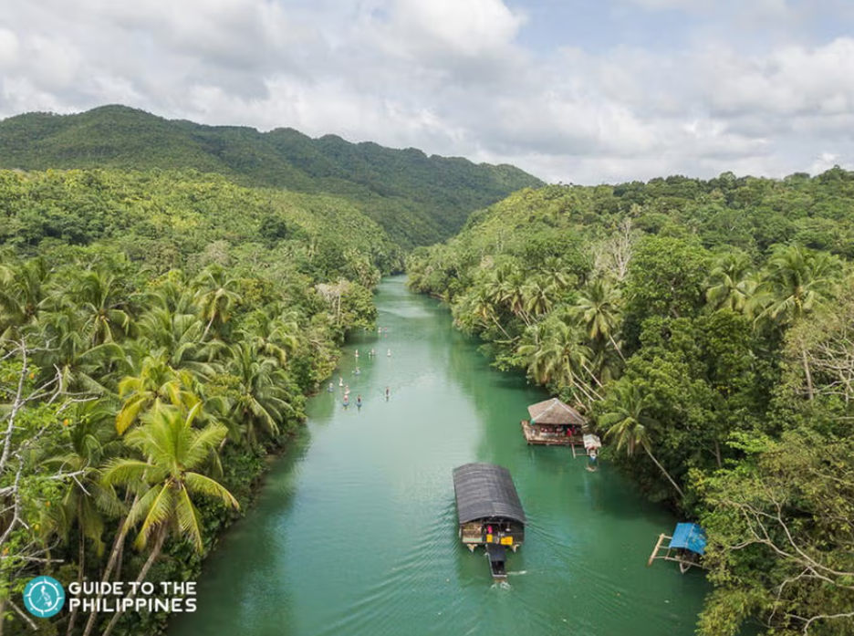
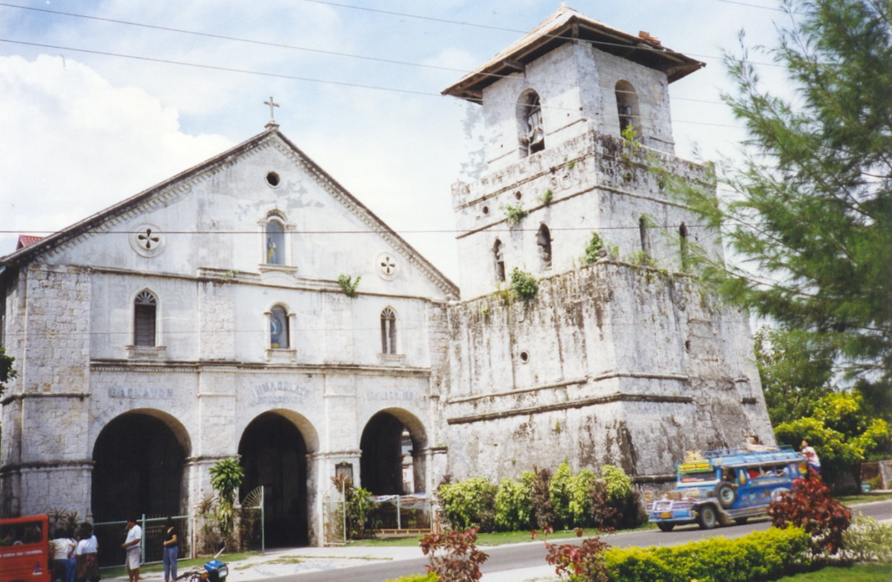
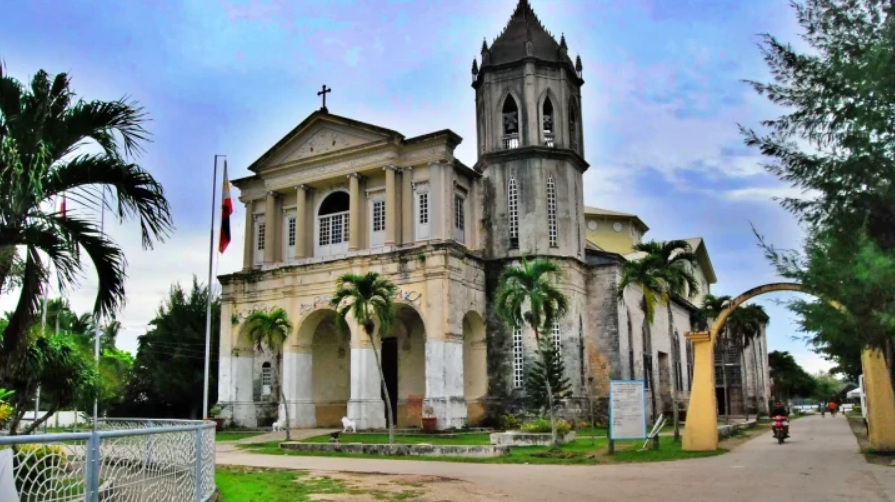
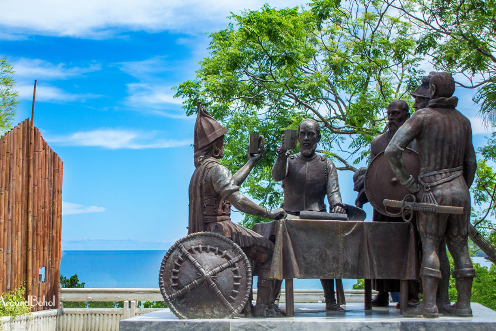
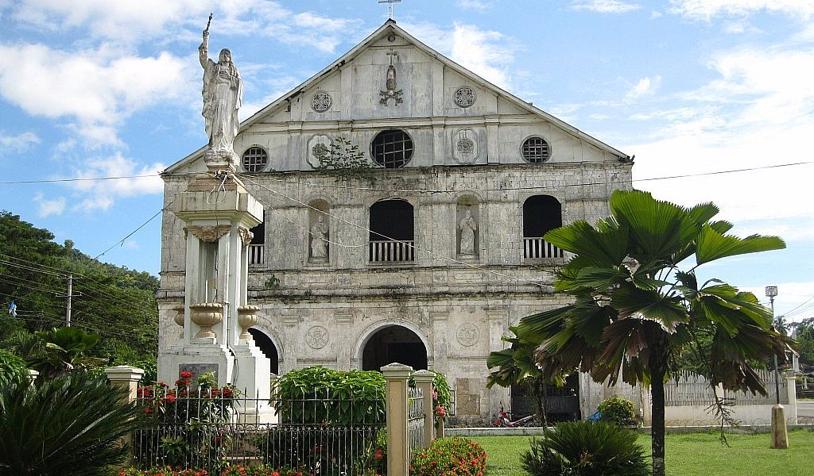

Explore Bohol
Discover the breathtaking beauty of Bohol, Philippines—a paradise of stunning landscapes, rich history, and warm hospitality.
Nature & Adventure 🌿
Chocolate Hills
(Carmen, Bohol) – Over 1,200 unique cone-shaped limestone hills.

Panglao Beach
(Panglao Island) – A white-sand paradise with clear waters and unique sea creatures.

Hinagdanan Cave
(Dauis, Panglao) – A stunning limestone cave with an underground lagoon.
Loboc River
(Loboc, Bohol) – A scenic river with floating restaurants and lush greenery.
Religious & Cultural Sites ⛪
Baclayon Church
(Baclayon, Bohol) – One of the oldest stone churches in the Philippines.
Dauis Church
(Dauis, Panglao) – A Spanish-era church known for its miraculous well.
Blood Compact Shrine
(Tagbilaran City) – A historical landmark of the 1565 Spanish-Filipino pact.
Loboc Church
(Loboc, Bohol) – A centuries-old church with intricate Baroque architecture.
